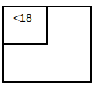
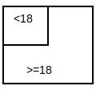

One way to think about probability is as a fraction of a finite set, where a ...
The idea is that the fraction is representative of the likelihood of some statement, called a proposition, being true. For example, imagine attempting to determine the probability of a person being a child. One possibility is to randomly find 1000 people and determine how many of them are children. For example, if 250 out of the 1000 people are children, it's reasonable to assume that the likelihood of any random person being a child is 250/1000 = 0.25. In other words, there's a 0.25 probability that a person selected at random is a child.

df = pandas.read_csv('people.csv', index_col=0, skipinitialspace=True)
print(df, end='\n\n')
child = df['age'] < 18
print(f'{sum(child == True)=}', end='\n\n')
age overweight
0 22 True
1 53 False
.. ... ...
998 1 True
999 76 False
[1000 rows x 2 columns]
sum(child == True)=250
The notation for probability is P(A), where A is proposition.
Where as probability is the likelihood of some proposition being true, complement probability is the likelihood of that same proposition being false. If you already know what the probability of some proposition being true is, denoted as P(A), its complement probability is simply 1 - P(A).
For example, if you know that the probability of a person being a child is 0.25, then the probability of a person not being a child is 1 - 0.25 = 0.75.

If you were to think of probabilities as fractions of a finite set, the fraction of people that are children is 250/1000 (0.25). That leaves 750/1000 that aren't children (0.75). 1 - 0.25 = 0.75.
df = pandas.read_csv('people.csv', index_col=0, skipinitialspace=True)
print(df, end='\n\n')
child = df['age'] < 18
print(f'{sum(child == True)=}', end='\n\n')
print(f'{sum(child == False)=}', end='\n\n')
age overweight
0 22 True
1 53 False
.. ... ...
998 1 True
999 76 False
[1000 rows x 2 columns]
sum(child == True)=250
sum(child == False)=750
Where as the notation for probability is P(A), the notation for complement probability is P(A').
Consider two probabilities, both for the same population: P(A) and P(B). The probability that propositions A and B are both true is P(A) * P(B). For example, the probability that a person is a ...
The probability that a person is both a child and overweight should come out to 0.125.
df = pandas.read_csv('people.csv', index_col=0, skipinitialspace=True)
child = df['age'] < 18
overweight = df['overweight']
df = pandas.DataFrame(data={
'child': child,
'overweight': overweight,
'both': child & overweight
})
print(df, end='\n\n')
print(f'{df["child"].mean()=}', end='\n\n')
print(f'{df["overweight"].mean()=}', end='\n\n')
print(f'{df["both"].mean()=}', end='\n\n')
child overweight both
0 False True False
1 False False False
.. ... ... ...
998 True True True
999 False False False
[1000 rows x 3 columns]
df["child"].mean()=0.25
df["overweight"].mean()=0.5
df["both"].mean()=0.115
In the Python example above, the fraction of the population that's both a child and overweight comes out to roughly 0.125. One way to think about this is as an intersection: Think of the 1000 people above as randomly standing around. If you were to select ...
If you're selecting based on some criteria that doesn't factor in overweight-ness, then chances are that roughly half of the people you select will end up being overweight. In this case, 25% of the people above are children. As such, half of those 25% should be overweight: 0.25 * 0.5 = 0.125.
The reasoning works the other way as well. If you were to select ...
If you're selecting based on some criteria that doesn't factors in age, then chances are that roughly a quarter of the people you select will end up being children. In this case, 50% of the people above are overweight. As such, a quarter of those 50% should be children: 0.5 * 0.25 = 0.125.
Swapping the probabilities around produces some the same result: The probability that propositions B and A are both true is P(B) * P(A). The probability that a 0.5 people are overweight. Of those 0.5, a quarter of them are children. So, you're essentially isolating to the population that are overweight, of which a quarter are children: 0.125 percent of the population.
There is one caveat. If the propositions A and B aren't for the same population, the probability that P(A) and P(B) are both true will be 0.0. For example, the probability that ...
The conjunction probability of the two probabilities above is 0.0 because the probabilities are for different populations. A person can't be a rabbit and a rabbit can't be a person. The populations don't overlap.
Probability rules:
P(A) - Probability of some proposition A. P(A and B) - Probability of A and B both being true. P(A|B) - Probability of A given that B is true.
[TB:p9]
proposition - A declaration that either evaluated to true or false. For example, ...
"7 is prime" is true
"3 is greater than 4" is false.
probability - A fraction of a finite set. [TB:p2]
⚠️NOTE️️️⚠️
The book mentions that the term probability is iffy to define, but this is the definition to use for now.
P(A) means the probability of A. [TB:p8]
conjunction - Another name for the logical AND operator. [TB:p5]
conjunction probability - Probability of both A and B being true. [TB:p9]
conditional probability - A probability that depends on a condition (some other probability being true). [TB:p6] P(A|B) means that the probability of A given that B is true. [TB:p9]